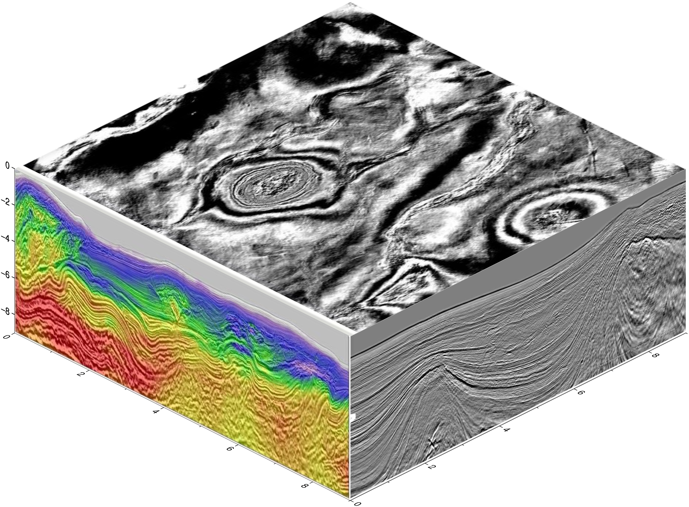
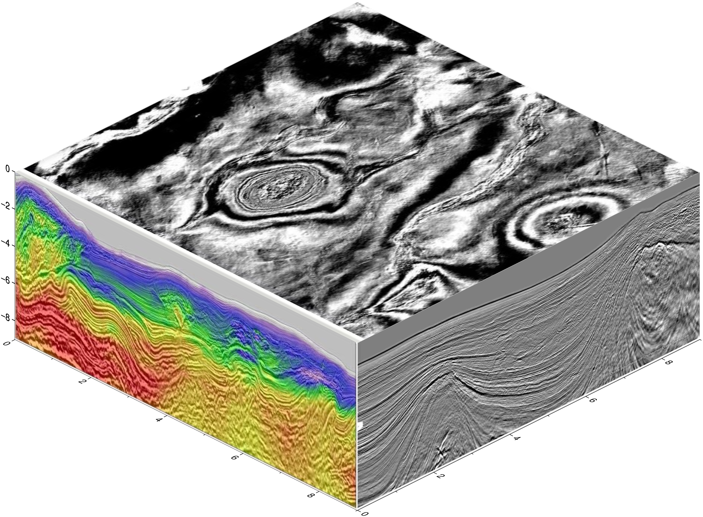

using GMT
cubeplot(GMT.TESTSDIR * "assets/seila_gray.jpg",
GMT.TESTSDIR * "assets/seis_section_rgb.jpg",
GMT.TESTSDIR * "assets/seis_section_gray.jpg",
zsize=6, show=true)
cubeplot(img1::Union{GMTimage, String}, img2::Union{GMTimage, String}="", img3::Union{GMTimage, String}="";
back::Bool=false, show=false, notop::Bool=false, kw...)Plot images on the sides of a cube. Those images can be provided as file names, or GMTimage objects.
img1,2,3: File names or GMTimages of the images to be plotted on the three cube sides. Of those three, only img1 is mandatory, case in which it will be repeated in the thre visible sides of the cube. If img1 and img2, this second image is plotted on the two vertical sides. When the three images are provided, the first goes to top (or bottom if back=true) the second to the xz and third to yz planes.
back: Boolean that defaults to false, meaning that images are printed on the front sides of the cube. If false, the images are printed in the back sides. Use this option when wanting to plot on the walls of a 3D lines/scatter or grid views. The default is to print on the front facades.
notop: If true, do not plot the top side (implies back=false)
show: If true, finish and display the figure.
The kw... keyword/value options may be used to pass:
region: The limits extents that will be used to annotate the x,y,z axes. It uses the same syntax as all other modules that accept this option (e.g. coast). It defaults to “0/9/0/9/0/9”
figsize: Select the horizontal size(s). Defaults to 15x15 cm.
zsize: Sets the size of z axis in cm. The default is 15.
view: The view point. Default is (135,30). WARNING: only azimute views from the 4rth quadrant are implemented.
transparency: Sets the image’s transparency level in the [0,1] or [0 100] intervals. Default is opaque.
inset or hole: Draws an inset hole in the cube’s Southern wall. This option is a tuple with the form: ((img1,img2[,img3]), width=?, [depth=?]) where (img1,img2[,img3]) are the images of the north (that is, the plane whose normal is y) and west (that is, the plane whose normal is x) and, optionally, bottom sides of the inset. The width and depth are the width and depth of the inset. If depth is not provided it defaults to width. These values must be given in percentage of the cube’s width and can be given in the [0-1] or [0-100] interval.
xlabel, ylabel, zlabel, title: Optional axes labels and title. Each one of these must be a string.
cmap, colormap, cpt, colorscale: Add a colorbar at the bottom of the figure. The colormap can be passed as a single argument or as a tuple of arguments, where first must be the colormap and second [and optional a third] are the axes colorbar labels taking the form: cmap=(C, "xlabel=Blabla1"[, "ylabel=Blabla2"]).
julia cubeplot(G::GMTgrid; top=nothing, topshade=false, zdown::Bool=false, xlabel="", ylabel="", zlabel="", title="", show=false, interp::Float64=0.0, kw...) |
| Make a 3D plot of a 3D GMTgrid (a cube) with a top view perspective from the 4rth quadrant (only one implemented). There are several options to control the painting of the cube walls but off course not all possibilities are covered. For ultimate control, users can create the side wall images separately and feed them to the cubeplot method that accepts only images as input. |
- cmap, colormap, cpt, colorscale: Pass in a GMTcpt colormap to be used to paint the vertical walls and optionally, the top wall. The default is to compute this from the cube’s min/max values with the turbo colormap. |
- colorbar: Add a colorbar at the bottom of the figure. The plotted colormap is either the auto-generated colormap (from the cube’s min/max and the turbo colormap) or the one passed via the cmap option. The optional syntax of this option is either: colorbar=true or colorbar=(C, "xlabel=Blabla1"[, "ylabel=Blabla2"]). Attention that when the labels request are passed, thy MUST conform with the xlabel=... and ylabel=... prefix part. |
- inset: Add an inset to the figure. This inset takes the form of a hole located in the lower right corner of the cube in which its inner walls are painted with partial vertical slices of the cube. The inset option may be passed as a two elements array or tuple where first element is the starting longitude (end is cube’s easternmost coordinate) and second the ending latitude (start is southernmost lat): an alternative syntax is to use inset=(lon=?, lat=?). |
- interp: When the cube layers are not equi-distant, the vertical side walls are not regular gris. This option, that is called by default, takes care of obtaining a regular grid by linear interpolation along the columns. This automatic interpolation uses the smallest increment in the vertical direction, but that may be overridden by the interp increment option (a float value). |
- region, limits: A 4 elements array or Tuple (x_min, x_max, y_min, y_max) with the limits of a sub-region to display. Default uses the entire cube. |
- show: If true display the figure. Default is false, i.e. it lets append further elements latter if wished. |
- top: An optional GMTgrid or the file name of a GMTgrid to be used to create the top wall of the cube. If, instead, a GMTimage is passed we plot it directly (grids are converted to images using default colormaps or one passed via topcmap). The default is to use the cube’s first slice as the top wall. |
- topshade: Only used when the top option was used to pass a GMTgrid (or the name of one). When true, the top wall image is created with the cube’s first slice and a shaded effect computed with grdgradient on the top grid (normally a topography grid). This creates a nice effect that shows both the cube’s first layer and the topography where it lies. Optionally, the topshade option may be used with a grdgradient grid computed with any other grid. |
- topcmap: An alternative colormap for the top wall. Default is the same as the turbo computed with cube G itself. |
- xlabel, ylabel, zlabel, title: Optional axes labels and title. Each one of these must be a string. |
- zdown: When true, the z-axis is positive down. Default is false (positive up). |
- zsize: Vertical size of the plotted cube. Default is 6 cm. Use a negative value if the z-axis is positive down, but see also the alternative zdown option. |
| Examples |
using GMT
cubeplot(GMT.TESTSDIR * "assets/seila_gray.jpg",
GMT.TESTSDIR * "assets/seis_section_rgb.jpg",
GMT.TESTSDIR * "assets/seis_section_gray.jpg",
zsize=6, show=true)
These examples show a GMT.jl version of a PyGMT post in the GMT forum and that can be found at the original author’s, JiahongLuo, Github site
The cubeplot function let us easily plot images on the sides of a cube. That function can also be used to create those side figures directly from a 3D cube grid.
using GMT
# Download data from:
model = gmtread("https://github.com/ShouchengHan/USTClitho2.0/blob/main/USTClitho2.0.wrst.sea_level.txt");
# Create two data cubes (grids) with the Vp and Vs velocities
Cvp = xyzw2cube(model);
Cvs = xyzw2cube(model, zcol=5);
# Add names to the cube layers to be used as titles in next figure
Cvp.names = ["Depth = $(Int(i)) km" for i in Cvp.v];
Cvs.names = ["Depth = $(Int(i)) km" for i in Cvs.v];gmtread [WARNING]: Long input record (4646 bytes) was truncated to first 4094 bytes! gmtread [WARNING]: Long input record (4507 bytes) was truncated to first 4094 bytes! ┌ Warning: file "https://github.com/ShouchengHan/USTClitho2.0/blob/main/USTClitho2.0.wrst.sea_level.txt" is empty or has no data after the header. └ @ GMT C:\Users\j\.julia\dev\GMT\src\gmtreadwrite.jl:242
The dataset must contain at least 4 columns (x,y,z,w) Stacktrace: [1] error(s::String) @ Base .\error.jl:35 [2] xyzw2cube(D::GMTdataset{Float64, 2}; zcol::Int64, datatype::DataType, tit::String, names::Vector{String}, varnames::Vector{String}) @ GMT C:\Users\j\.julia\dev\GMT\src\utils_types.jl:1818 [3] xyzw2cube(D::GMTdataset{Float64, 2}) @ GMT C:\Users\j\.julia\dev\GMT\src\utils_types.jl:1815 [4] top-level scope @ In[3]:4
Show all 12 layers of the P-waves velocity in a figure. We use a diffent colormap for each layer to avoid that layers become too monochromatic.
viz(Cvp, colorbar=true, cmap=:same, title="Vp model")
Show the P and S velocities with a slight variation of the top layer. For the P-velocity we plot the topography on top and for the S-velocity we show the superficial S velocity but apply a shading effect calculated from the topography grid.
using GMT # Hide
cubeplot(Cvp, top="@earth_relief_05m", colorbar=("xlabel=P-wave velocity", "ylabel=km/s"), zdown=true, title="Vp model")
cubeplot!(Cvs, top="@earth_relief_05m", topshade=true, zdown=true, colorbar=("xlabel=S-wave velocity", "ylabel=km/s"), xshift=18, title="Vs model", show=true)UndefVarError: `Cvp` not defined Stacktrace: [1] top-level scope @ In[4]:2

To finish we show how to make an inset view in the 3D model.
using GMT # Hide
cubeplot(Cvp, top="@earth_relief", inset=(lon=100, lat=35), topshade=true, zdown=true,
colorbar=("xlabel=P-wave velocity", "ylabel=km/s"), show=true)UndefVarError: `Cvp` not defined Stacktrace: [1] top-level scope @ In[5]:2